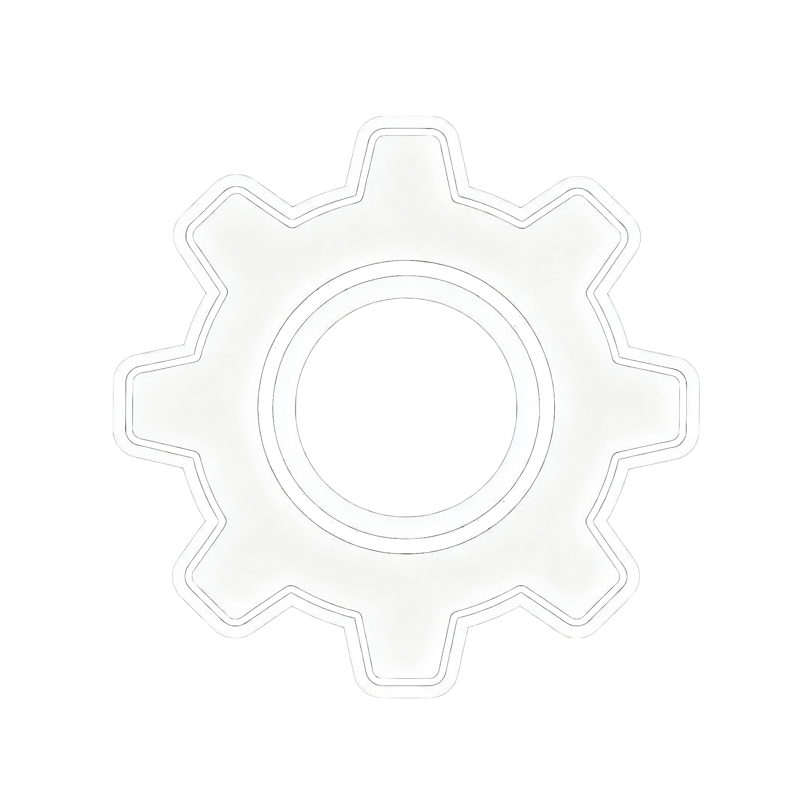
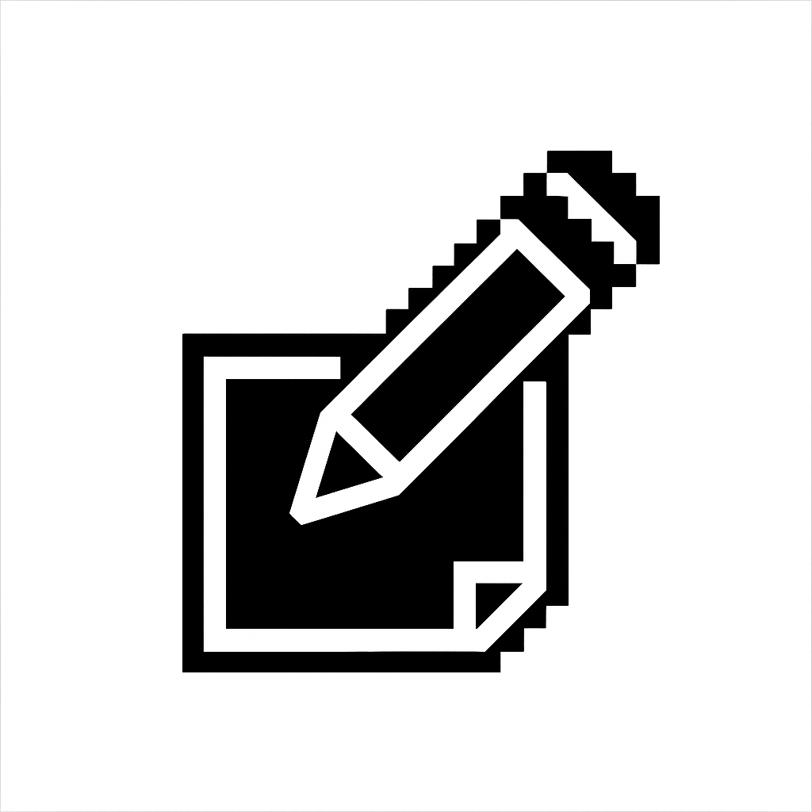
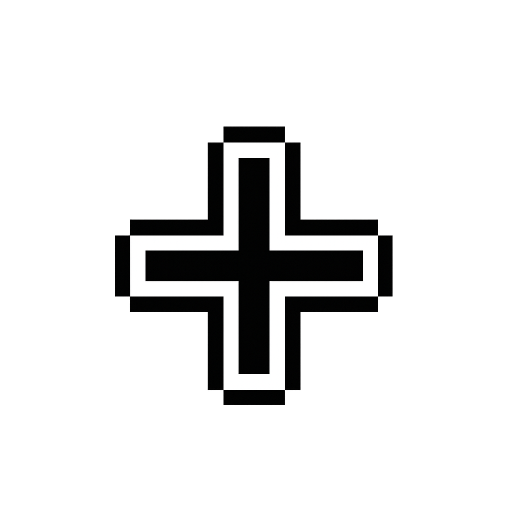
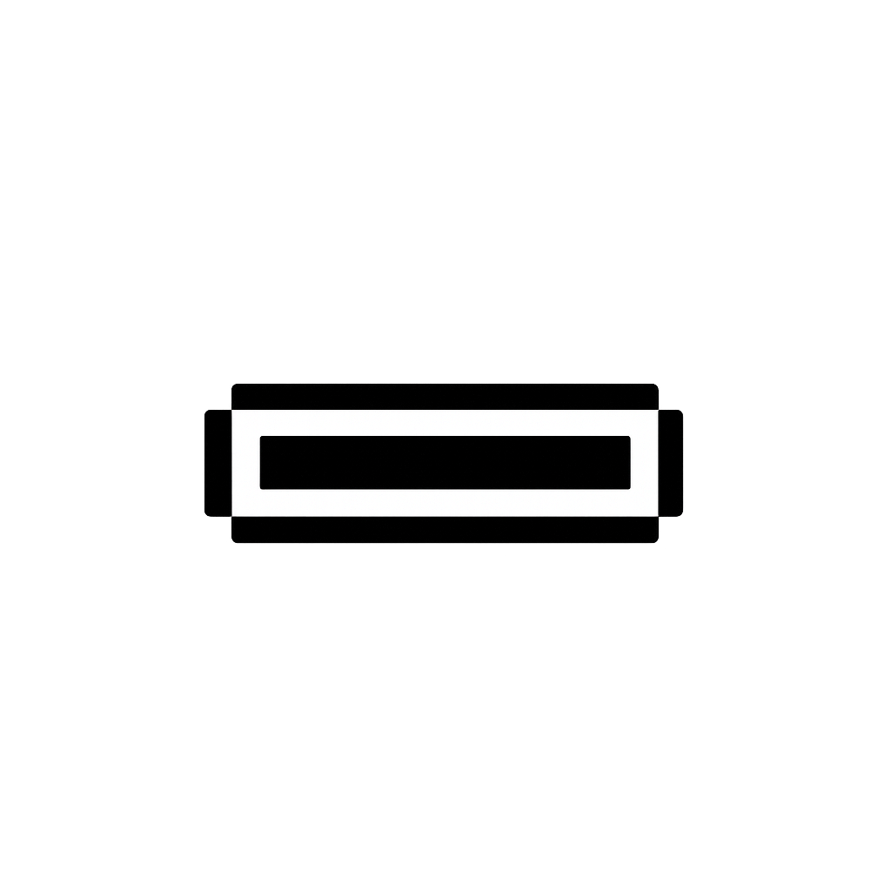
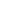
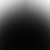

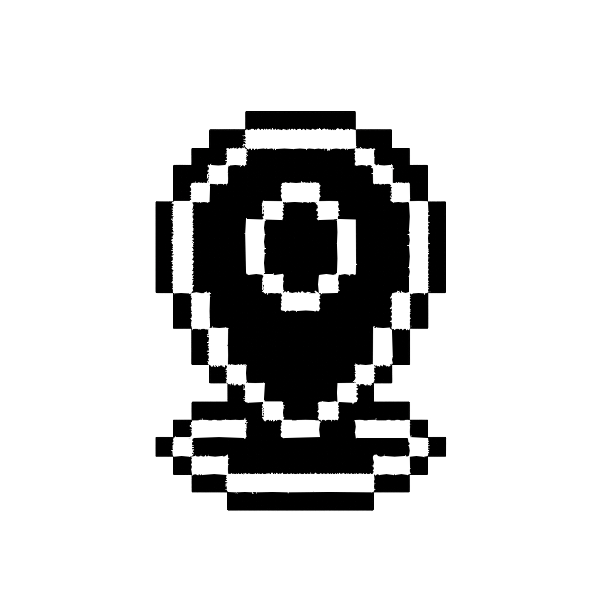
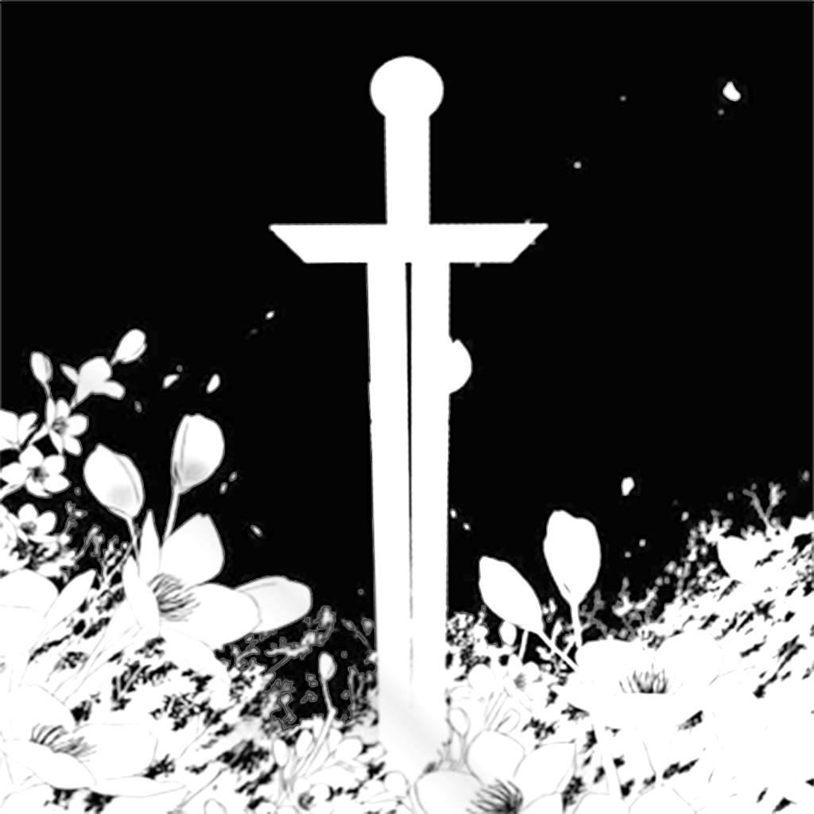
单位高度（UnitHeight）= 83像素
来源于iPhone 6/7/8标准屏幕高度（1334px）垂直16等分的设计基准：1334 ÷ 16 = 83.375 ≈ 83px
核心约束：
项目中的实现：
private const float UnitHeight = 83f; // 所有UI类中统一定义
黄金比例（Golden Ratio）≈ 0.618
UI设计中优先使用黄金比例进行空间分割：
项目中的实现：
private const float GoldenRatio = 0.618f; // 黄金比例
private const float GoldenRatioSmall = 0.382f; // 黄金比例补数（1 - 0.618）
示例应用：
float screenWidth = GetComponent<RectTransform>().rect.width;
float panelWidth = screenWidth * GoldenRatio; // 面板宽度为屏幕宽度的0.618
UI设计是数学证明，而非艺术创作。
通过量子化网格系统（单位高度）和黄金比例，确保垂直布局的数学一致性和视觉和谐性。
项目大量使用Unity内置UI Sprite，而非自定义图片，以获得更好的性能和一致性。
| Sprite ID | 名称 | 用途 | 使用示例 |
|---|---|---|---|
10901 |
Checkmark（对勾） | Toggle勾选图标 | OptionToggle, Home, Login |
10905 |
UISprite（白色方块） | 按钮/面板背景 | OptionButton, OptionAmount, Home, Option |
10907 |
Background（背景） | Slider背景 | OptionSlider |
10911 |
Knob（圆形把手） | Slider把手、输入框 | OptionSlider, OptionAmount, OptionInput, OptionFilter, Home |
10913 |
Background（背景2） | 进度条背景 | Start, OptionProgress |
10917 |
InputFieldBackground | 遮罩/背景 | Story, Start, Root, Option, Login |
YAML中的实现方式：
m_Sprite: {fileID: 10905, guid: 0000000000000000f000000000000000, type: 0}
使用模式：
m_Color 属性改变背景颜色存放位置：Assets/Game/HotResources/RawAssets/Texture/
所有PNG图片的详细使用情况：
| 预览 | 图片名称 | 代码加载 | Prefab引用 | 使用详情 | 状态 |
|---|---|---|---|---|---|
| RectangleSolid.png | ✅ StartSettings.cs:83 | ✅ 14个Prefab | 面板背景（Home, Login, Initialize, Option, OptionTitleButton等） | ✅ 高频使用 | |
 |
Settings.png | ✅ Start.cs:484 | ❌ | 设置按钮图标 | ✅ 使用中 |
 |
Edit.png | ✅ StartSettings.cs:84 | ❌ | 编辑按钮图标（缓存复用） | ✅ 使用中 |
| True.png | ✅ StartSettings.cs:85 | ✅ 2个Prefab | Checkmark图标（Story, OptionConfirm） | ✅ 使用中 | |
 |
Increase.png | ❌ | ✅ 2个Prefab | 增加按钮（Home, OptionAmount） | ✅ 使用中 |
 |
Decrease.png | ❌ | ✅ 2个Prefab | 减少按钮（Home, OptionAmount） | ✅ 使用中 |
 |
Sprite.png | ❌ | ✅ 1个Prefab | 进度条填充（OptionProgressWithValue） | ✅ 使用中 |
| RadiativeRing.png | ❌ | ✅ 3个Prefab | 装饰效果（Initialize, Login） | ✅ 使用中 | |
 |
Radar.png | ❌ | ✅ 1个Prefab | 雷达可视化（OptionRadar） | ✅ 使用中 |
 |
Ring.png | ❌ | ✅ 7个Prefab | 点击特效、UI动画（Root, Home, Dark, Account, Accounts, ClickEffect） | ✅ 使用中 |
| wheelgradient.png | ❌ | ✅ 1个Prefab | 点击特效（ClickEffect） | ✅ 使用中 | |
| TopBorder.png | ❌ | ✅ 1个Prefab | 重复文件（OptionRadar） | ⚠️ 待替换删除 | |
| False.png | ❌ | ❌ | - | ❌ 未使用 | |
|
Circle.png | ❌ | ❌ | - | ❌ 未使用 |
 |
CircleOutline.png | ❌ | ❌ | - | ❌ 未使用 |
 |
Border.png | ❌ | ❌ | - | ❌ 未使用 |
| Rectangle.png | ❌ | ❌ | - | ❌ 未使用 | |
 |
Focus.png | ❌ | ❌ | - | ❌ 未使用 |
| Pixel.png | ❌ | ❌ | - | ❌ 未使用 | |
 |
ICON.png | ❌ | ❌ | 关联材质：ICON.mat | ⚠️ 材质可能使用 |
| Author.png | ❌ | ❌ | - | ❌ 未使用 |
使用情况统计：
| 文件名 | 尺寸 | GUID | 使用频率 | 用于 |
|---|---|---|---|---|
| RectangleSolid.png | 80×40 | d7ef6b31ab55e354a9a21ff536ad24c4 |
⭐⭐⭐⭐⭐ | 14个Prefab + StartSettings代码加载（面板背景） |
| Ring.png | - | 639b7ad6f044b3a4da3752891d598836 |
⭐⭐⭐⭐ | 7个Prefab（Root, Home, Dark, Account, ClickEffect等点击特效/UI动画） |
| RadiativeRing.png | - | 7b84f5d88895ffa4ebc526b21542d185 |
⭐⭐⭐ | 3个Prefab（Initialize, Login, Account装饰元素） |
| Sprite.png | - | a65d834b426c0df4985749fa99d1d465 |
⭐⭐ | OptionProgressWithValue（进度条填充） |
| True.png | - | ae371a810b535f2459c56ff4c380dabc |
⭐⭐ | 2个Prefab + StartSettings代码加载（确认图标） |
| Increase.png | 1024×1024 | 631ef34dc0593854cba947dce1f9ef4b |
⭐⭐ | 2个Prefab（OptionAmount, Home增加按钮） |
| Decrease.png | 1024×1024 | b79803a6321fa034ca1ff355740846c1 |
⭐⭐ | 2个Prefab（OptionAmount, Home减少按钮） |
| Radar.png | - | de9bce3ad415b9a469b54786edaf9ef0 |
⭐ | OptionRadar（雷达可视化） |
| wheelgradient.png | - | 926e960b99b42884692b2bcdb480a5ac |
⭐ | ClickEffect.prefab（点击特效渐变） |
| TopBorder.png | OptionRadar顶部边框 | bf270f8141102b34a896d7d90de11ab0 |
⭐ | OptionRadar（⚠️ 重复文件，待替换删除） |
| 文件名 | 尺寸 | GUID | 用途 | 状态 |
|---|---|---|---|---|
Settings.png |
2048×2048 | 69c3b353ee9dc4bbab2bf9427a27fa0c |
设置按钮（齿轮图标） | ✅ 使用中（Start.cs动态加载） |
Edit.png |
1024×1024 | f26ff36c4f4cb1b49a36c84bef5e14fd |
编辑操作图标 | ✅ 使用中（StartSettings.cs动态加载） |
Ring.png |
- | 639b7ad6f044b3a4da3752891d598836 |
点击特效、UI动画 | ✅ 使用中（Root, Home, Dark, Account等7个Prefab） |
wheelgradient.png |
- | 926e960b99b42884692b2bcdb480a5ac |
点击特效渐变 | ✅ 使用中（ClickEffect.prefab） |
False.png |
- | 60eb08970ce85964b8ce4b9cf3d70928 |
否定/关闭状态图标 | ⚠️ 可用但未使用 |
Circle.png |
- | 854f5a1a78ca36e4eb8e70d0bc0cfd53 |
圆形基础图形 | ⚠️ 可用但未使用 |
CircleOutline.png |
- | 473ec83ee9e8e9a4da868a1a257d93e7 |
圆形轮廓 | ⚠️ 可用但未使用 |
Border.png |
- | be64b6d3c74b88c43959dac5b03334be |
边框装饰 | ⚠️ 可用但未使用 |
Rectangle.png |
- | 147aa7121b9e52d498226eaf3cc9d606 |
矩形基础图形 | ⚠️ 可用但未使用 |
Focus.png |
- | ca6722533be8f1b449f17a1e0110160f |
焦点指示器 | ⚠️ 可用但未使用 |
Author.png |
- | 48127ddb8a302ca44bb8ad7e50c43ae4 |
特殊图标 | ⚠️ 可用但未使用 |
ICON.png |
- | 2a07a4d1c1f31d94eb19ee67ecf021c0 |
材质关联（ICON.mat） | ⚠️ 可用但未使用 |
Pixel.png |
- | eaf53a854f957da4cb5a2d2c0694aabd |
1x1像素工具图 | ⚠️ 可用但未使用 |
项目中所有按钮（Button）组件使用统一的颜色配置：
| 状态 | RGB值 | 说明 |
|---|---|---|
| Normal（正常） | rgb(255, 255, 255) / #FFFFFF |
纯白色，完全不透明（a=1） |
| Highlighted（高亮） | rgb(245, 245, 245) / #F5F5F5 |
浅灰色，鼠标悬停时 |
| Pressed（按下） | rgb(200, 200, 200) / #C8C8C8 |
中灰色，点击按下时 |
| Selected（选中） | rgb(245, 245, 245) / #F5F5F5 |
与Highlighted相同 |
| Disabled（禁用） | rgb(200, 200, 200, 128) / #C8C8C880 |
中灰色，半透明（a=0.5） |
YAML中的实现：
m_Colors:
m_NormalColor: {r: 1, g: 1, b: 1, a: 1}
m_HighlightedColor: {r: 0.9607843, g: 0.9607843, b: 0.9607843, a: 1}
m_PressedColor: {r: 0.78431374, g: 0.78431374, b: 0.78431374, a: 1}
m_SelectedColor: {r: 0.9607843, g: 0.9607843, b: 0.9607843, a: 1}
m_DisabledColor: {r: 0.78431374, g: 0.78431374, b: 0.78431374, a: 0.5019608}
m_ColorMultiplier: 1
m_FadeDuration: 0.1
使用原则：
m_TargetGraphic的Image组件的m_Color来实现按钮背景色全项目统一深色主题。RectangleSolid.png 本身为黑色圆角矩形，Image.color 为乘法 tint（白色 tint 保持原色），因此所有面板背景均为深色，文本统一使用白色系。
覆盖所有 UI，包括 Prefab 体系（Home、Option、Story、Login、Initialize）和动态创建（StartSettings）。
| 角色 | RGBA | 说明 |
|---|---|---|
| 正文/标题/标签 | (1, 1, 1, 1) 白色 |
所有主要文本 |
| 次要文本 | (1, 1, 1, 0.6) 半透白 |
设置项值、辅助说明 |
| 分区标题 | (1, 1, 1, 0.5) 半透白 |
Section Header |
| 强调/操作 | (0.2, 0.5, 0.9, 1) 蓝色 |
添加按钮、确认操作、选中项 |
| 危险操作 | (1, 0.4, 0.4, 1) 红色 |
删除等破坏性操作文字 |
| 输入框占位符 | (1, 1, 1, 0.5) 半透白 |
InputField Placeholder |
| 正向数值提示 | Color.yellow |
NumericalTip 正值 |
| 负向数值提示 | Color.red |
NumericalTip 负值 |
38px（全项目统一，Prefab 和动态创建均一致）RectangleSolid.png（黑色）+ Image.color = Color.white 的标准模式10905（白色方块）+ 颜色着色UnitHeight = 83px109051090110907 或 1091310905（带颜色）1091110913Sprite.png（自定义，guid: a65d834b426c0df4985749fa99d1d465）10911Radar.png 实现特定样式RectangleSolid.png（最常用）RadiativeRing.png 用于视觉效果flowchart TD
Start[需要UI图片资源] --> Q1{是否为简单几何形状?}
Q1 -->|是| Q2{Unity内置sprite有合适的吗?}
Q2 -->|有| UseBuiltin[使用Unity内置sprite
通过m_Color改变颜色]
Q2 -->|无| CheckExisting{项目中已有类似图片?}
Q1 -->|否| Q3{是否为复杂图标/装饰?}
Q3 -->|是| CheckExisting
Q3 -->|否| UseBuiltin
CheckExisting -->|有| ReuseCustom[复用现有自定义图片
如: RectangleSolid.png]
CheckExisting -->|无| CreateNew[创建新的自定义图片
注意: 需评审必要性]
UseBuiltin --> End[完成]
ReuseCustom --> End
CreateNew --> End
style UseBuiltin fill:#90EE90
style ReuseCustom fill:#FFD700
style CreateNew fill:#FFA07A
决策优先级：
在Prefab的YAML中定义：
m_Sprite: {fileID: 21300000, guid: d7ef6b31ab55e354a9a21ff536ad24c4, type: 3}
在C#脚本中使用：
var sprite = AssetManager.Instance.LoadSprite("RawAssets/Texture", "Settings");
当前使用情况：
Start.cs：动态加载 Settings.png（设置按钮）StartSettings.cs：动态加载 RectangleSolid.png、Edit.png、True.png（缓存复用）m_Color 属性修改颜色RectangleSolid.png 是标准面板背景Increase.png/Decrease.png 用于所有增减操作83px（1个单位高度）m_Colors 部分定义基于现有模式和设计规范，StartSettings各组件的详细参数：
| 属性 | 值 | 说明 |
|---|---|---|
| 背景图片 | RectangleSolid.png |
参考OptionTitleButton |
| 高度 | 0.5 × UnitHeight = 41.5px |
Tab按钮通常为半个单位高度 |
| 文本字号 | 38px |
标准按钮文字大小 |
| 文本对齐 | 居中（Center） | 水平垂直居中 |
| 颜色配置 | 标准Button颜色 | 见"四、颜色规范" |
| 属性 | 值 | 说明 |
|---|---|---|
| 背景图片 | Unity内置 10905 |
参考OptionButton |
| 背景透明度 | a=0 |
透明背景，只显示文字 |
| 高度 | 1 × UnitHeight = 83px |
标准按钮高度 |
| 文本字号 | 38px |
与其他按钮一致 |
| 文本对齐 | 居中（Center） | - |
| 属性 | 值 | 说明 |
|---|---|---|
| 背景图片 | RectangleSolid.png |
与Tab按钮风格统一 |
| 高度 | 1 × UnitHeight = 83px |
标准列表项高度 |
| 内部间距 | 左右各 10px |
文字与边缘的距离 |
| 列表间距 | 5px |
两个账号项之间的间隔 |
| 编辑按钮 | Edit.png 图标 |
1024×1024原图，缩放至约40×40px（StartSettings.cs已使用） |
| 删除按钮 | 纯文字 "Delete" | 与编辑按钮同一行，右对齐 |
| 属性 | 值 | 说明 |
|---|---|---|
| 高度 | 1 × UnitHeight = 83px |
- |
| Dropdown箭头 | Unity内置 10911 |
标准下拉箭头 |
| 文本字号 | 38px |
- |
| 属性 | 值 | 说明 |
|---|---|---|
| 高度 | 1 × UnitHeight = 83px |
- |
| Toggle背景 | Unity内置 10905 |
参考OptionToggle |
| Checkmark | Unity内置 10901 |
勾选标记 |
| Toggle尺寸 | 50×50px |
标准Toggle大小 |
| 属性 | 值 | 说明 |
|---|---|---|
| 面板高度 | 12 × UnitHeight = 996px |
StartSettings.cs中定义 |
| TabBar高度 | 1 × UnitHeight = 83px |
Tab按钮+分隔线 |
| Content区域 | 11 × UnitHeight = 913px |
面板高度 - TabBar高度 |
| ScrollView间距 | 上下各 20px |
内容与边缘的padding |
架构原则：
AddPrefab("Prefabs/UI", "组件名") 加载供开发者处理YAML时参考：
d7ef6b31ab55e354a9a21ff536ad24c4 → RectangleSolid.png
7b84f5d88895ffa4ebc526b21542d185 → RadiativeRing.png
a65d834b426c0df4985749fa99d1d465 → Sprite.png
631ef34dc0593854cba947dce1f9ef4b → Increase.png
b79803a6321fa034ca1ff355740846c1 → Decrease.png
de9bce3ad415b9a469b54786edaf9ef0 → Radar.png
bf270f8141102b34a896d7d90de11ab0 → TopBorder.png
ae371a810b535f2459c56ff4c380dabc → True.png
69c3b353ee9dc4bbab2bf9427a27fa0c → Settings.png
f26ff36c4f4cb1b49a36c84bef5e14fd → Edit.png
639b7ad6f044b3a4da3752891d598836 → Ring.png
926e960b99b42884692b2bcdb480a5ac → wheelgradient.png
共7个基础形状图片 + 2个特殊图标：
| 文件名 | 类型 | 建议 |
|---|---|---|
False.png, Circle.png, CircleOutline.png |
基础形状 | 预留或删除 |
Border.png, Rectangle.png, Focus.png, Pixel.png |
基础形状 | 预留或删除 |
Author.png, ICON.png |
特殊图标 | 确认用途或删除 |
决策建议：
TopBorder.png（GUID: bf270f8141102b34a896d7d90de11ab0）OptionRadar.prefab 引用RectangleSolid.png, Settings.png）TopBorder.png 明确表示顶部边框）abc.png, test.png）